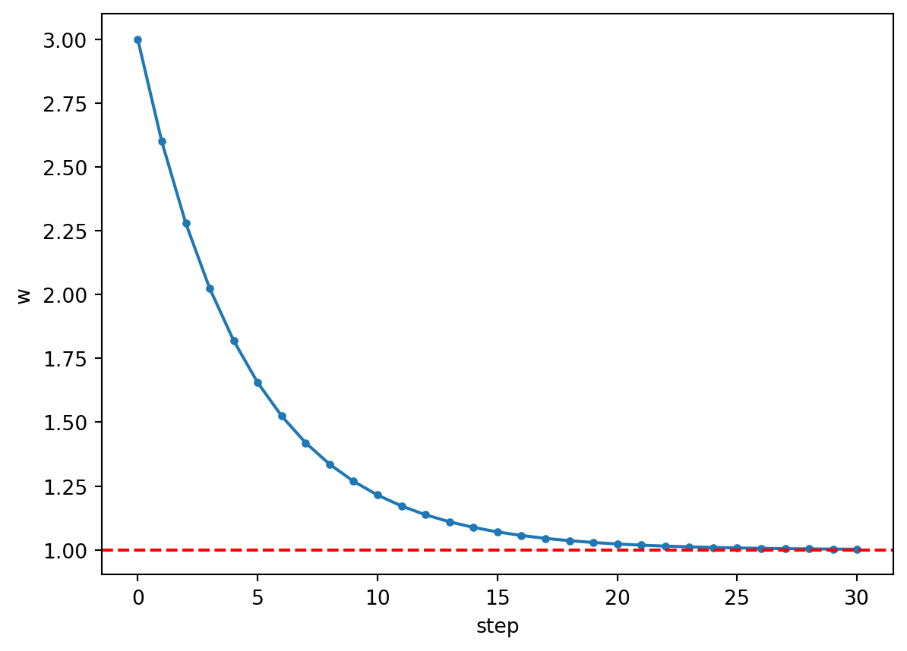
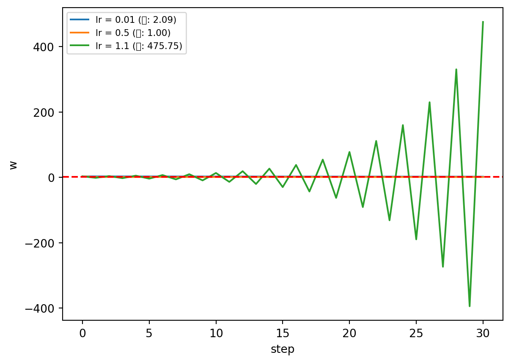
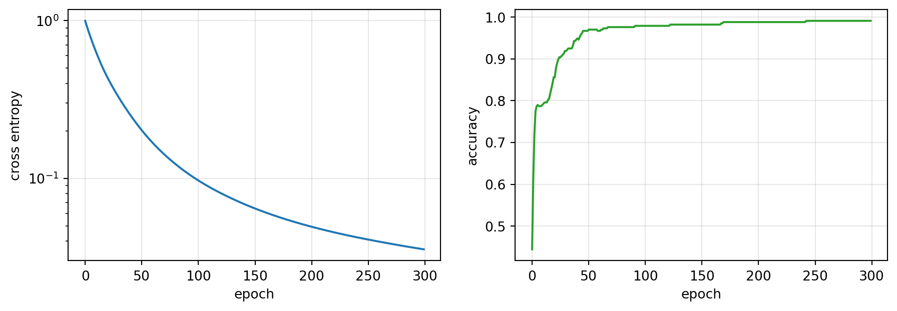

import numpy as np
import pandas as pd
import torch
import torch.nn as nn
import matplotlib.pyplot as plt
torch.manual_seed(42)<torch._C.Generator at 0x75d43efe8850>
import numpy as np
import pandas as pd
import torch
import torch.nn as nn
import matplotlib.pyplot as plt
torch.manual_seed(42)<torch._C.Generator at 0x75d43efe8850>y_true = torch.tensor([3.0, -0.5, 2.0, 7.0])
y_pred = torch.tensor([2.5, 0.0, 2.0, 8.0])
y_true - y_pred # 오차tensor([ 0.5000, -0.5000, 0.0000, -1.0000])((y_true - y_pred) ** 2).mean() # 직접 계산tensor(0.3750)nn.MSELoss()(y_pred, y_true) # 같은 값tensor(0.3750)분류의 정답은 “3번 클래스”처럼 번호다. 번호끼리 빼는 것은 의미가 없다. 그래서 모형이 확률을 내게 하고, 그 확률로 손실을 만든다.
\[p_k = \frac{e^{z_k}}{\sum_j e^{z_j}}\]
z = torch.tensor([2.0, 1.0, 0.1]) # 모형이 낸 점수(로짓) 3개
ztensor([2.0000, 1.0000, 0.1000])torch.exp(z) # 지수를 취하면 전부 양수가 된다tensor([7.3891, 2.7183, 1.1052])torch.exp(z).sum() # 합으로 나누면 확률이 된다tensor(11.2125)torch.exp(z) / torch.exp(z).sum()tensor([0.6590, 0.2424, 0.0986])z.softmax(dim=0) # PyTorch가 해 주는 같은 계산tensor([0.6590, 0.2424, 0.0986])z.softmax(dim=0).sum() # 합은 항상 1tensor(1.0000)softmax(z) 함수를 작성하시오. (힌트: torch.exp, .sum())
def softmax(z):
return None # ← 여기를 채우세요
got = softmax(torch.tensor([1.0, 2.0, 3.0]))
assert got is not None and abs(float(got.sum()) - 1.0) < 1e-5
print('통과')def softmax(z):
return torch.exp(z) / torch.exp(z).sum()
softmax(torch.tensor([1.0, 2.0, 3.0]))tensor([0.0900, 0.2447, 0.6652])\[\mathcal{L} = -\log p_{\text{정답}}\]
p = z.softmax(dim=0)
ptensor([0.6590, 0.2424, 0.0986])p[0] # 정답이 0번 클래스라면, 그 확률tensor(0.6590)-torch.log(p[0]) # 손실tensor(0.4170)nn.CrossEntropyLoss()(z.unsqueeze(0), torch.tensor([0])) # 같은 값tensor(0.4170)for q in [0.99, 0.9, 0.5, 0.1, 0.01]: # 정답 확률이 낮을수록 손실이 크다
print(f'{q:5.2f} → {-np.log(q):6.3f}') 0.99 → 0.010
0.90 → 0.105
0.50 → 0.693
0.10 → 2.303
0.01 → 4.605nn.CrossEntropyLoss 의 두 가지 함정
① Softmax를 미리 적용하면 안 된다. 이 함수가 내부에서 Softmax를 한다.
② 정답은 원-핫이 아니라 클래스 번호(정수) 다. dtype 은 long 이어야 한다.
logits = torch.tensor([[2.0, 1.0, 0.1], [0.5, 2.5, 0.3]])
target = torch.tensor([0, 1]) # 클래스 번호
target.dtypetorch.int64nn.CrossEntropyLoss()(logits, target)tensor(0.3185)로짓 z(1차원)와 정답 번호 label 을 받아 손실을 돌려주는 함수를 작성하시오.
def cross_entropy(z, label):
return None # ← 여기를 채우세요
got = cross_entropy(torch.tensor([2.0, 1.0, 0.1]), 0)
assert got is not None and abs(float(got) - 0.4170) < 1e-3
print('통과')def cross_entropy(z, label):
return -torch.log(softmax(z)[label])
cross_entropy(torch.tensor([2.0, 1.0, 0.1]), 0)tensor(0.4170)requires_grad 와 backward()w = torch.tensor(3.0, requires_grad=True) # 이 값에 대한 기울기를 추적한다
wtensor(3., requires_grad=True)L = (w - 1.0) ** 2 # 손실 = (w-1)²
Ltensor(4., grad_fn=<PowBackward0>)L.backward() # 기울기 계산
w.grad # 손으로 하면 2(w-1) = 2(3-1) = 4tensor(4.)\[\frac{dL}{dw} \approx \frac{L(w+h) - L(w-h)}{2h}\]
f = lambda v: (v - 1.0) ** 2
h = 1e-4
(f(3.0 + h) - f(3.0 - h)) / (2 * h) # 자동미분과 같은 값4.000000000008441w = torch.tensor(3.0, requires_grad=True)
for step in range(3):
(w - 1.0).pow(2).backward()
print(step + 1, '번째 backward 후 :', float(w.grad))1 번째 backward 후 : 4.0
2 번째 backward 후 : 8.0
3 번째 backward 후 : 12.0w = torch.tensor(3.0, requires_grad=True)
for step in range(3):
if w.grad is not None:
w.grad.zero_() # 매번 지운다
(w - 1.0).pow(2).backward()
print(step + 1, '번째 (지우고) :', float(w.grad))1 번째 (지우고) : 4.0
2 번째 (지우고) : 4.0
3 번째 (지우고) : 4.0zero_grad() 를 빼먹으면 조용히 틀린다
에러는 안 나고 기울기만 계속 커진다. 학습이 이상하면 여기부터 확인한다.
\(L = w^3 + 2w\) 일 때 \(w=2\) 에서의 기울기를 구하고, 손으로 구한 \(3w^2+2 = 14\) 와 맞는지 확인하시오.
w = torch.tensor(2.0, requires_grad=True)
L = None # ← 손실을 정의하세요
L.backward()
assert abs(float(w.grad) - 14.0) < 1e-4
print('통과')w = torch.tensor(2.0, requires_grad=True)
L = w ** 3 + 2 * w
L.backward()
w.gradtensor(14.)\[w \leftarrow w - \eta \frac{\partial L}{\partial w}\]
w = torch.tensor(3.0, requires_grad=True)
lr = 0.1
(w - 1.0).pow(2).backward()
w.grad # 기울기 4tensor(4.)3.0 - lr * float(w.grad) # 갱신된 w2.6w = torch.tensor(3.0, requires_grad=True)
path = [float(w)]
for step in range(30):
if w.grad is not None:
w.grad.zero_()
(w - 1.0).pow(2).backward()
with torch.no_grad():
w -= lr * w.grad # 갱신
path.append(float(w))
path[-1] # 정답은 11.0024759769439697plt.plot(path, 'o-', ms=3)
plt.axhline(1.0, color='red', ls='--')
plt.xlabel('step'); plt.ylabel('w'); plt.show()
lr 을 0.01, 0.5, 1.1 로 바꿔 30스텝씩 돌리고 w 의 움직임을 겹쳐 그리시오. 1.1 에서는 무슨 일이 일어나는가?
for lr_try in [0.01, 0.5, 1.1]:
w = torch.tensor(3.0, requires_grad=True)
path = [float(w)]
for step in range(30):
... # ← 위 3-2의 루프를 옮겨 오세요
plt.plot(path, label=f'lr = {lr_try}')
plt.axhline(1.0, color='red', ls='--'); plt.legend(); plt.show()for lr_try in [0.01, 0.5, 1.1]:
w = torch.tensor(3.0, requires_grad=True)
path = [float(w)]
for step in range(30):
if w.grad is not None:
w.grad.zero_()
(w - 1.0).pow(2).backward()
with torch.no_grad():
w -= lr_try * w.grad
path.append(float(w))
plt.plot(path, label=f'lr = {lr_try} (끝: {path[-1]:.2f})')
plt.axhline(1.0, color='red', ls='--')
plt.xlabel('step'); plt.ylabel('w'); plt.legend(fontsize=8); plt.show()
학습률이 작으면 너무 느리고, 크면 최솟값을 뛰어넘어 발산한다.
optimizer.zero_grad() # ① 지난 기울기를 지운다
loss = criterion(model(X), y) # ② 예측하고 손실을 잰다
loss.backward() # ③ 기울기를 구한다
optimizer.step() # ④ 파라미터를 갱신한다optimizer.step() 이 하는 일은 3-2절에서 손으로 한 그것이다. 직접 해 보고 비교한다.
torch.manual_seed(0)
toy = nn.Linear(2, 1)
Xd = torch.randn(20, 2)
yd = (Xd @ torch.tensor([2.0, -1.0]) + 0.5).unsqueeze(1)
crit = nn.MSELoss()
for ep in range(200):
loss = crit(toy(Xd), yd)
toy.zero_grad()
loss.backward()
with torch.no_grad():
for p in toy.parameters():
p -= 0.1 * p.grad # ← optimizer.step() 이 하는 일
toy.weight, toy.bias(Parameter containing:
tensor([[ 2.0000, -1.0000]], requires_grad=True),
Parameter containing:
tensor([0.5000], requires_grad=True))torch.manual_seed(0)
toy2 = nn.Linear(2, 1)
opt = torch.optim.SGD(toy2.parameters(), lr=0.1)
for ep in range(200):
opt.zero_grad()
crit(toy2(Xd), yd).backward()
opt.step()
toy2.weight, toy2.bias # 같은 결과(Parameter containing:
tensor([[ 2.0000, -1.0000]], requires_grad=True),
Parameter containing:
tensor([0.5000], requires_grad=True))optimizer 는 갱신 규칙을 대신 적어 주는 도구일 뿐이다.
from torch.utils.data import TensorDataset, DataLoader
URL = 'https://raw.githubusercontent.com/mwaskom/seaborn-data/master/penguins.csv'
d = pd.read_csv(URL).dropna().reset_index(drop=True)
classes = sorted(d['species'].unique())
classes['Adelie', 'Chinstrap', 'Gentoo']X = torch.tensor(d[['bill_length_mm', 'bill_depth_mm',
'flipper_length_mm', 'body_mass_g']].to_numpy(dtype='float32'))
X.shape # 펭귄 333마리 x 치수 4개torch.Size([333, 4])y = torch.tensor(d['species'].map({c: i for i, c in enumerate(classes)}).to_numpy())
y[:10] # 정답은 클래스 번호 (정수)tensor([0, 0, 0, 0, 0, 0, 0, 0, 0, 0])y.dtype # CrossEntropyLoss 는 long 을 요구한다torch.int64torch.bincount(y) # 클래스별 마리 수tensor([146, 68, 119])X = (X - X.mean(dim=0)) / X.std(dim=0, unbiased=False) # 숫자 크기를 맞춘다
loader = DataLoader(TensorDataset(X, y), batch_size=len(X))
len(loader)1torch.manual_seed(42)
model = nn.Sequential(
nn.Linear(4, 16), nn.ReLU(),
nn.Linear(16, 3), # 출력 3개 = 클래스 3개
)
modelSequential(
(0): Linear(in_features=4, out_features=16, bias=True)
(1): ReLU()
(2): Linear(in_features=16, out_features=3, bias=True)
)sum(p.numel() for p in model.parameters())131출력층에 Softmax를 붙이지 않는다. nn.CrossEntropyLoss 가 내부에서 하기 때문이다. 모형은 로짓을 내놓는다.
criterion = nn.CrossEntropyLoss()
optimizer = torch.optim.SGD(model.parameters(), lr=0.1)
hist = {'loss': [], 'acc': []}
for epoch in range(300):
for xb, yb in loader:
optimizer.zero_grad() # ①
loss = criterion(model(xb), yb) # ②
loss.backward() # ③
optimizer.step() # ④
with torch.no_grad():
out = model(X)
hist['loss'].append(float(criterion(out, y)))
hist['acc'].append(float((out.argmax(1) == y).float().mean()))
hist['loss'][0], hist['loss'][-1] # 첫 손실 → 마지막 손실(0.9971505999565125, 0.035457443445920944)hist['acc'][-1] # 정확도0.9909909963607788argmax(1) 은 행마다 가장 큰 값의 위치를 준다 — 그것이 모형이 고른 클래스다.
model(X)[:3] # 로짓 3줄tensor([[ 4.6592, -1.2729, -3.4640],
[ 3.4419, -0.8664, -2.6112],
[ 2.8070, 0.0872, -2.8362]], grad_fn=<SliceBackward0>)model(X)[:3].argmax(1) # 각 줄에서 가장 큰 값의 자리tensor([0, 0, 0])fig, ax = plt.subplots(1, 2, figsize=(11, 3.4))
ax[0].plot(hist['loss']); ax[0].set_yscale('log'); ax[0].set_ylabel('cross entropy')
ax[1].plot(hist['acc'], color='C2'); ax[1].set_ylabel('accuracy')
for a in ax: a.set_xlabel('epoch'); a.grid(alpha=0.3)
plt.show()
학습은 손실로 하고, 보고는 정확도로 한다. 손실은 미분 가능해야 하지만 정확도는 미분할 수 없기 때문이다.
with torch.no_grad():
pred = model(X).argmax(1)
cm = pd.crosstab(pd.Series(y.numpy(), name='실제'), pd.Series(pred.numpy(), name='예측'))
cm.index = classes
cm.columns = classes
cm| Adelie | Chinstrap | Gentoo | |
|---|---|---|---|
| Adelie | 145 | 1 | 0 |
| Chinstrap | 2 | 66 | 0 |
| Gentoo | 0 | 0 | 119 |
우리는 333마리로 학습하고, 같은 333마리로 정확도를 쟀다. 시험 범위를 미리 보고 시험을 친 셈이다. 왜 위험한지는 4주차에서 다룬다.
nn.Linear(4, 3) 한 층만으로 같은 학습을 돌려 정확도를 비교하시오.
torch.manual_seed(42)
simple = None # ← nn.Linear(...)
# 위 5-3의 루프를 그대로 옮겨 300에폭 학습시키고 정확도를 확인하세요torch.manual_seed(42)
simple = nn.Linear(4, 3)
opt2 = torch.optim.SGD(simple.parameters(), lr=0.1)
for epoch in range(300):
for xb, yb in loader:
opt2.zero_grad()
criterion(simple(xb), yb).backward()
opt2.step()
with torch.no_grad():
acc = float((simple(X).argmax(1) == y).float().mean())
acc, hist['acc'][-1] # 1층 vs 2층(0.9819819927215576, 0.9909909963607788)이 문제는 직선으로도 거의 갈라진다. 은닉층이 항상 이득은 아니다 — 2주차 자동차 연비처럼 휘어 있는 문제에서 비로소 값을 한다.
optimizer.zero_grad()
loss = criterion(model(X), y)
loss.backward()
optimizer.step()CNN도, Transformer도 이 네 줄을 반복한다. 바뀌는 것은 model 뿐이다.
z = torch.tensor([[1.0, 2.0, 3.0]])
t = torch.tensor([2])z.softmax(dim=1)tensor([[0.0900, 0.2447, 0.6652]])-torch.log(z.softmax(dim=1)[0, 2])tensor(0.4076)nn.CrossEntropyLoss()(z, t) # 위와 같은 값tensor(0.4076)a = torch.tensor(1.0, requires_grad=True)
b = torch.tensor(2.0, requires_grad=True)
((a * b + a) ** 2).backward()
a.grad, b.grad # 손계산 2(ab+a)(b+1), 2(ab+a)a(tensor(18.), tensor(6.))실습 4주차: 진짜 표 하나를 끝까지 — 결측치와 범주형이 섞인 표를 순서대로 처리하고, 미니배치로 학습하고, 러닝커브로 진단해 조기 종료까지 한다.